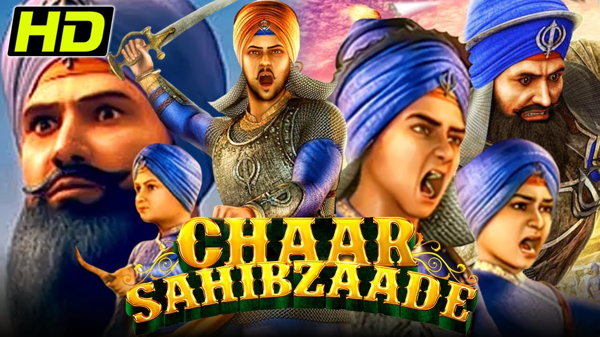

CHAR SAHIBJADE

Chaar Sahibzaade (transl. Four princes) is a 2014 Indian Punjabi
Hindi 3D computer-animated historical drama film written
and directed by Harry Baweja. It is based on the sacrifices
of the sons of the 10th Sikh guru Guru Gobind Singh
Sahibzada Ajit Singh, Jujhar Singh,
Zorawar Singh, and Fateh Singh.
Om Puri provided the film's narration,
and the voice artists for various characters were kept anonymous